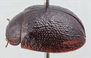
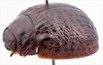
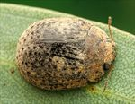
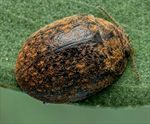
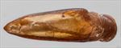
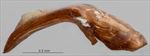
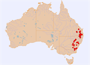
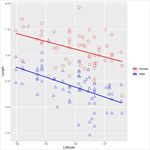

Click on images to enlarge

Female, Eidsvold, S.E. Queensland

Female, Braidwood, S.E. New South Wales

Female, Pilliga State Forest, New South Wales

Female, Amiens, S.E. Queensland

Aedeagus, dorsal view (Eidsvold, Queensland)

Aedeagus, lateral view (Eidsvold, Queensland)

Distribution

Body Length vs Latitude
Ta29
Name
Trachymela leai (Blackburn)
Reference specimen
1998-0880a, Murgon, SE Queensland.
Adult Description
Length: ♂ (5.4)5.6–7.0(7.3) mm (n=77), ♀ (6.2)6.5–(7.7)8.0 mm (n=65).
Colouration:
Head: Dark brown with fronto-clypeal suture sometimes darker or black; labrum slightly or considerably lighter in shade; mandibles dark brown with black tips, rarely almost completely black; antennomeres 1–3 uniformly straw-brown to light brown, 4–11 slightly or (less often) considerably darker brown, individual antennomeres often slightly darker distally.
Pronotum: Brown, concolorous with head; a small, usually oval-shaped dark brown or black mark present at edge of disc, behind inside level of eye; a smaller, round, elevated pimple present in centre of foveal depression is often darker brown or black.
Scutellum: Brown, concolorous with or fractionally darker shade than adjacent region of pronotum, often broadly edged in darker brown.
Elytra: Brown, concolorous with pronotum; punctures are concolorous with interstices; surface is scattered with small (2 pd) to moderate-sized (4–5 pd) barely or clearly elevated black verrucae, often their arrangement is without organization, sometimes some or many of them are arranged in longitudinal rows; humeral callus darker or, more rarely, concolorous with surrounding area.
Venter & Legs: Uniformly dark brown (almost black); inside surface of elytral epipleura black, rarely dark brown.
Cuticular Wax: Sparse to quite thick, relatively evenly to slightly unevenly distributed grey or (more usually) light brown layer; the unevenness is often due to many small clumps of higher concentrations between the verrucae, these sometimes almost taking the form of vaguely-defined longitudinal rows of clumps of denser wax.
Morphology:
Head: Punctures moderately large (pd ≈ 1.5–2× ef), clearly impressed and closely but slightly unevenly distributed, adjacent punctures sometimes touching. Antennae short (AL: ♂ 33–37% BL, ♀ 29–31% BL), filiform.
Pronotum: Almost evenly curved transversely; foveal depression absent or very indistinct, a prominently elevated round pustule situated behind centre of eye midway between anterior and posterior edges; discal area with surface relatively smooth, usually nitid, puncturation clearly impressed and similar to or fractionally smaller than those on head, evenly to slightly and unevenly moderately densely to sparsely distributed (spacing ≈ 2.5–4 pd), becoming much coarser towards lateral margins. Front margins join lateral margins in a smoothly rounded right-angle, with lateral margin curving almost imperceptibly and smoothly towards rear margin with the curvature becoming greater in posterior third, broadest about 2/3 of distance to posterio-lateral angle.
Scutellum: Smooth or rough textured, unpunctured or sparsely punctured.
Elytra: Surface evenly curved, punctures surrounded by convex interstices, closely spaced and quite evenly distributed, many interstices are thickened to form small or moderate-sized, slightly elevated verrucae with neighbouring ones sometimes merging to form larger elevated surfaces, verrucae are usually more isolated, elevated and prominent in posterior half where they are also often arranged into weakly-defined longitudinal rows; suture not carinate in posterior third; surface continuous (rarely slightly discontinuous) under humeral callus. Vertical extension of epipleura moderate (HCE/PW = 0.36–0.38).
Venter: Prosternal process almost parallel or narrowing anteriorly, lightly closed anteriorly; prostrenal process and mesoventrite devoid of long setae; a single long seta present on anterior, median and posterior trochanters; front edge of metaventrite beveled, flat; inner edge of epipleurae lacking setae.
Male Genitalia (Aedeagus):
Dimensions: Moderate length (LPE = 27–32% BL), lanceolate.
Dorsal view: Shaft widest at or just anterior to basal sulcus with sides converging in straight line or slightly sinuous arc from there to tip; dorsal surface membranous with a very faint dorso-median channel present; ostium very small; tip triangular.
Lateral view: Shaft sharply curved at 120° at about 40% of length from basal extreme, lower edge towards apex from the angulation quite straight until close to apex where it curves downwards very slightly, dorsal surface elevated into a blunt peak at about 20% posterior from apex, tip deflexed.
Immature Stages
Eggs: Pale orange, lightly punctured, 1.6 × 0.62 mm, batch size about 26.
Larvae: Unknown.
Similar species
Ta03: Occurs on the northern tablelands of New South Wales into southern Queensland. It is distinguishable from Ta29 by the elytral verrucae, which take the form of dark longitudinal ridges, and the more pointed apex of the aedeagus viewed dorsally and its straight ventral surface in the apical half, lacking the slight but distinct downward curve near the apex that is present in Ta29.
Ta105: Distributed in Victoria and South Australia. Specimens can be very similar in external morphology to specimens of Ta29 from southern NSW, but its aedeagus is noticeably more sharply pointed at the apex.
Ta57: Overlaps broadly with Ta29 both in size and geographical distribution and both feed on the same range of hosts. Live specimens may be distinguished by the distribution and colour of cuticular wax, with that of Ta57 of more than one colour and distributed unevenly over the pronotum and elytra. Ta57 has more elevated verrucae, its elytral suture is carinate in the posterior third and the prosternal process is very wide, not at all narrowing anteriorly.
Ta24: Small specimens of Ta24 can appear superficially similar to Ta29; they are easily distinguishable by the "rough" appearance of the scutellum of Ta29 (usually with puncturation) and its compact antennae.
Notes
Taxonomy: This is likely to be the same as Trachymela leai (Blackburn), by comparison with the type specimen in the Natural History Museum, London (BMNH). It is a member of the triangulum group of species, distinguished by their lanceolate aedeagus.
Distribution & Abundance: It has a wide distribution and is often abundant where it occurs, from at least southern NSW to central Queensland. The species is notable for the considerable disparity in the size of the sexes.
Host Associations: Ta29 has been found on several species of Eucalyptus, primarily within the Section Adnataria (81% of records). Host records (from a total of 106) include mostly E. crebra (n=42) and unspecified ironbarks (n=6), E. populnea (n=9), E. conica (n=5), E. moluccana (n=4), E. melliodora (n=1) and unspecified box-barked eucalypts, very likely Adnataria (n=19). A few records from unspecified smooth-barked eucalypts (n=4), E. dealbata (n=7), E. mannifera (n=3), E. rubida (n=2) and E. tereticornis (n=1), E. bridgesiana (n=3) and two records from an unspecified peppermint constitute the remainder of the records.
Morphological Variation: There are some issues in the definition of this species that indicate that either two or more species are included within Ta29, or this is a particularly variable species. The major differences are in the form of the elytral verrucae. In most northern specimens (which are found mainly on ironbarks, particularly Eucalyptus crebra, and E. populnea), the verrucae are barely elevated, presenting a rather "washed-out" appearance, and are often quite irregular in their arrangement. Specimens from southern New South Wales predominantly occur on "box-barked eucalypts" and have verrucae that are more clearly elevated, discrete, often smaller and many are arranged in longitudinal series. However, some individuals, especially in the area of the northern New England Tableland, are somewhat transitional between these forms. In the same area, individuals of Ta29 are sometimes found together with ones of the closely related Ta03. The aedeagus of specimens from southern New South Wales and the ACT tends to be very slightly longer relative to body size than that of specimens from the northern part of the range. Specimens from the southern part of the distribution tend to be larger, as can be seen from the plot of body length against latitude. Several relatively large specimens from southern New South Wales were found on species in the Eucalyptus section Maidenaria (E. mannifera and E. rubida). However, these appear little different from other specimens of Ta29 from far southern localities and the morphometrics are a good fit for the species. It is these southern specimens that most closely resemble the type specimen of T. leai (Blackburn). The aedeagus from a specimen from Tooraweenah (NSW) has the apical portion of the aedeagus more prominently downturned than is typical for Ta29.
Copyright © 2026. All rights reserved.
{kind=link}
{kind=link}
{kind=link}
{kind=link}
{kind=link}
{kind=link}
{kind=link}
{kind=link}